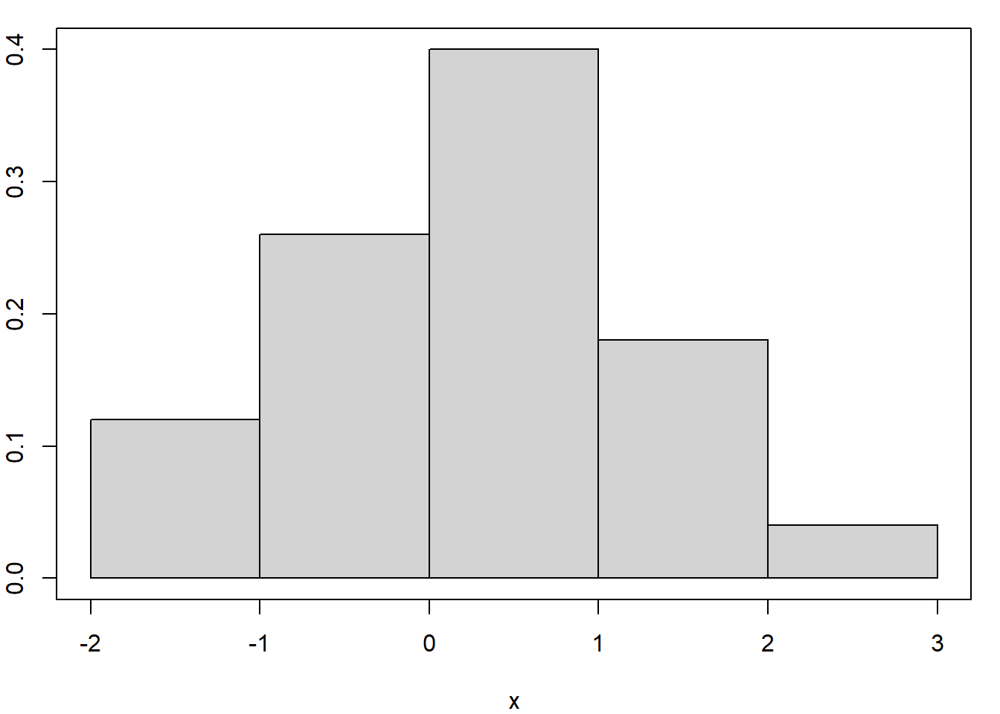
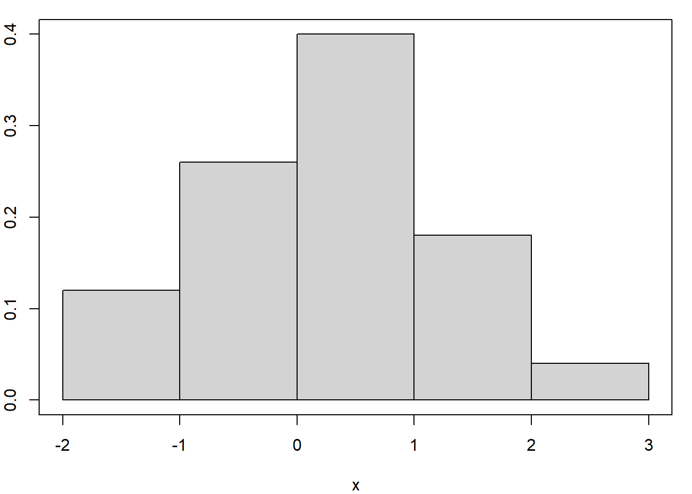
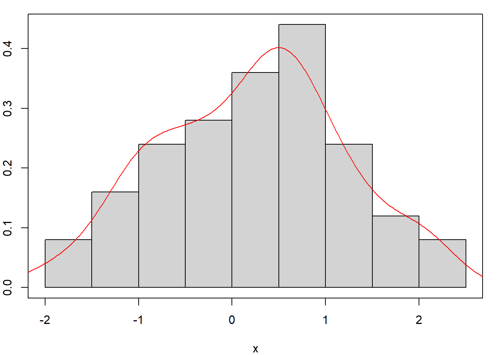

Code
set.seed(1340)
x = rnorm(50)
par(mar=c(4,2,1,1))
hist(x, main = NULL, freq = FALSE, breaks = "Sturges")
box()
Code
par(mar=c(4,2,1,1))
hist(x, main = NULL, freq = FALSE, breaks = "Scott")
box()
Última atualização: 03 de agosto de 2018.
Sejam \(x_{1}, x_{2}, \cdots x_{n}\), variáveis aleatórias independentes identicamente distribuídas com distribuição comum \(\mathcal{L} (X)\) e seja \(P\) a classe de todas as possíveis distribuições de \(X\) que consiste de todas as distribuições absolutamente contínuas ou discretas.
Definição. A estatística \(T(X)\) é suficiente para a família de distribuições \(\mathcal{p}\) se a distribuição condicional de \(X|T=t\) é a mesma, seja qual for a função de distribuição \(F \in \mathcal{p}\).
Exemplo. Sejam \(x_{1}, x_{2}, \cdots x_{n}\) variáveis aleatórias independentes igualmente distribuídas com distribuição absolutamente contínua e seja \(T = (X_{(1)}, \cdots, X_{(n)})\) a estatística de ordem. Então: \[f(x|T = t) = 1n!,\] e vemos que \(T\) é uma estatística suficiente para a família das distribuições absolutamente contínuas.
Definição. A família de distribuições \(\mathcal{P}\) é completa se somente a função zero for o estimador não viesado de 0, isto é,
\[E_F \Big( h(X) \Big) = 0,\] para todo \(F\in\mathcal{P}\) implica que \(h(X)=0\). Isto para todo \(x\) exceto para um conjunto nulo em relação a cada \(F\in\mathcal{P}\).
Exemplo. Seja \(X\sim Uniforme(0,\theta)\), onde \(\theta\in (0,\infty)\). Mostraremos que esta família de distribuições é completa. Precisamos mostrar que
\[E_\theta \Big( g(X) \Big) = \int_0^\theta g(x)\frac{1}{\theta}\mbox{d}x \, = \, 0, \qquad \forall \,\theta>0,\] se, e somente se, \(g(x)=0\), para todo \(x\). Em geral, esse resultado segue a teoria da integração. Se \(g\) for contínua, diferenciamos ambos os lados de
\[\int_0^\theta g(x)\mbox{d}x = 0,\]
para obter \(g(\theta)=0\), para todo \(\theta>0\). Agora, seja \(X_1,X_2,\cdots,X_n\) uma amostra aleatória da distribuição \(Uniforme(0,\theta)\). Também, seja \(X_{(n)}=\max(X_1,X_2,\cdots,X_n)\). Então, a função de densidade de \(X_{(n)}\) é dada por
\[f_{X_{(n)}}(x|\theta)=n\theta^{-n}x^{n-1}, \qquad 0 < x < \theta,\]
zero caso contrário. Vemos por um argumento semelhante que \(X_{(n)}\) é completa, o que é o mesmo do que dizer que $ {f_{X_{(n)}}(x|); , >0 }$ é uma família de densidades completa. Claramente \(X_{(n)}\) é suficiente.
Definição. Uma estatística \(T(X)\) é dita ser completa em relação a uma classe de distribuições \(\mathcal{P}\) se a classe de distribuições induzidas de \(T\) for completa.
Claro que todos os exemplos já encontrados de estatísticas completas ou famílias completas de distribuições para o caso paramétrico podem ser aplicados nesta situação.
A estatística de ordem \((X_{(1)},\cdots,X_{(n)})\) é uma estatística suficiente e completa desde que a amostra \(X_1,X_2,\cdots,X_n\) seja composta de variáveis aleatórias independentes identicamente distribuídas do tipo discreta ou contínua.
Definição. Diz-se que uma função real \(g(F)\) é estimável se tiver um estimador não viciado, isto é, se existe uma estatística \(T(X)\) tal que \[\mbox{E}_F\Big( T(X)\Big)=g(F),\] para todo \(F\in\mathcal{P}\).
Exemplo. Se \(\mathcal{P}\) é a classe de todas as distribuições para as quais o segundo momento existe, \(X\) é um estimador não viciado de \(\mu(F)\), a média da população. Similarmente \[\mu_2(F)=\mbox{Var}_F(X),\] é também estimável e um estimador não viciado é
\[S^2=\frac{1}{n-1}\sum_{i=1}^n (X_i-\overline{X})^2\cdot\]
Da mesma forma, \(\overline{X}-\overline{Y}\) é um estimador não viciado de \(\mbox{E}(X)-\mbox{E}(Y)\),
\[\frac{1}{n}\{\mbox{número de } X>c\}\]
é um estimador não viciado de \(P_F(X>c)\) e assim por diante.
Definição. O grau \(m\), \(m\geq 1\), de um parâmetro estimável \(g(F)\) é o menor tamanho de amostra para o qual o parâmetro é estimável, ou seja, é o menor \(n\) para o qual existe um estimador não viciado \(T(X_1,\cdots,X_n)\) com \[\mbox{E}_F\Big( T(X)\Big)=g(F),\] para todo \(F\in\mathcal{P}\).
Exemplo. O parâmetro \[g(F)=P_F(X>c),\] onde \(c\) é uma constante conhecida, têm grau 1. Também \(\mu(F)\) é estimável com grau 1, para isto assumimos que existe ao menos um \(F\in\mathcal{P}\) tal que \(\mu(F)\neq 0\). Acontece que \(\mu_2(F)\) é estimável com grau 2, desde que \(\mu_2(F)\) não seja estimável de forma não viciada por somente uma observação. Ao menos duas observações são necessárias. De maneira similar, \(\mu^2(F)\) têm grau 2.
Definição. Um estimador não viciado de algum parâmetro baseado no tamanho mínimo de amostra, ou seja, com amostra iagual ao grau \(m\) é chamado de kernel.
Exemplo. Seja \(X_1,\cdots,X_n\) uma amostra aleatória com distribuição \(F\). Então \(X_i\) é o kernel de \(\mu(F)\); \(X_iX_j\), \(i\neq j\), é o kernel de \(\mu^2(F)\) e cada
\[T(X_i,X_j)=X_i^2-X_iX_j, \qquad i=1,\cdots,n, \quad i\neq j,\] é kernel de \(\mu_2(F)\).
Existe um kernel simétrico para cada parâmetro estimável.
Demonstração. Seja \(T(X_1,\cdots,X_m)\) um kernel para \(g(F)\). Também é \[T_s(X_1,\cdots,X_m)=\frac{1}{m!}\sum_P T(X_{i_1},X_{i_2}\cdots,X_{i_m})\] um kernel para \(g(F)\), onde a soma \(P\) acontece sobre todas as \(m!\) permutacoes de \(\{1,2,\cdots,m\}\).
Exemplo. Seja \(X_1,\cdots,X_n\) uma amostra aleatória com distribuição \(F\). Um kernel simétrico para \(\mu_2(F)\) é \[T_s(X_i,X_j)=\frac{1}{2}\Big( T(X_i,X_j)+T(X_j,X_i) \Big) \, = \, \frac{1}{2}\big( X_i-X_j\big)^2, \qquad i=1,\cdots,n, \quad i\neq j\cdot\]
Definição. Seja \(g(F)\) um parâmetro estimável de grau \(m\) e \(X_1,X_2,\cdots,X_n\) uma amostra aleatória de \(F\) de tamanho \(n\), \(n\geq m\). Correspondendo a qualquer kernel \(T(X_1,\cdots,X_n)\) de \(g(F)\), definimos a U-estatística para a amostra como \[U(X_1,X_2,\cdots,X_n)=\frac{1}{{n \choose m}}\sum_C T_s(X_{i_1},X_{i_2},\cdots,X_{i_n}),\] onde o índice da soma \(C\) percorre todas as \({n \choose m}\) permutações de \(m\) inteiros \((i_1,i_2,\cdots,i_m)\) escolhidos de \(\{1,2,\cdots,n\}\) e \(T_s\) é um kernel simétrico, como definido na demonstração do Teorema anterior.
Claramente, a U-estatística definida é simétrica nos \(X\) e \[\mbox{E}_F\big(U(X)\big)=g(F),\] para todo \(F\).
Exemplo. Seja \(X_1,\cdots,X_n\) uma amostra aleatória com distribuição \(F\). Para estimarmos \(\mu(F)\) a U-estatística é dada por
\[U(X_1,X_2,\cdots,X_n)=\frac{1}{n}\sum_{i=1}^n X_i\cdot\] Para estimarmos \(\mu_2(F)\), um kernel simétrico é \[T_s(X_{i_1},X_{i_2}) = \frac{1}{2}\big( X_{i_1}-X_{i_2}\big)^2,\] para \(i_1=1,2,\cdots,n\), \(i_1\neq i_2\). A correspondente U-estatística é \[
U(X) \, = \, \frac{1}{{n \choose 2}}\sum_{i_1< i_2}\frac{1}{2}\big(X_{i_1}-X_{i_2}\big)^2
\, = \, \frac{1}{n-1}\sum_{i=1}^n \big( X_i-\overline{X}\big)^2 \, = \, S^2\cdot
\]
De maneira similar, para estimarmos \(\mu_2(F)\), o kernel simétrico é \(T_s(X_{i_1},X_{i_2})=X_{i_1}X_{i_2}\) e a correspondente U-estatística é \[ U(X) \, = \, \frac{1}{{n \choose 2}}\sum_{i< j}X_iX_j \, = \, \frac{1}{n(n-1)}\sum_{i\neq j} X_iX_j\cdot \] Para estimarmos \(\mu^3(F)\) um kernel simétrico seria \(T_s(X_{i_1},X_{i_2},X_{i_3})=X_{i_1}X_{i_2}X_{i_3}\), sendo que a U-estatística é \[ U(X) \, = \, \frac{1}{{n \choose 3}}\sum_{i< j< k}X_iX_jX_k \, = \, \frac{1}{n(n-1)(n-2)}\sum_{i\neq j\neq k} X_iX_jX_k\cdot \]
O seguinte resultado mostra a importância da U-estatística.
Seja \(\mathcal{P}\) a classe de todas as distribuições absolutamente contínuas ou discretas. Qualquer função estimável \(g(F)\), \(F\in\mathcal{P}\), tem um estimador único que é não viciado, simétrico nas observações e uniformemente de variância mínima entre todos os estimadores não viciados.
Demonstração. Seja \(X_1,\cdots,X_n\) uma amostra aleatória de \(F\), \(F\in\mathcal{P}\) e seja \(T(X_1,\cdots,X_n)\) um estimador não viciado de \(g(F)\). Considere o conjunto de todas as \(n!\) permutações de \(\{1,2,\cdots,n\}\) e indexá-los adequadamente. Seja \(\{i_1,i_2,\cdots,i_n\}\) o i-ésimo deste conjunto e seja \[ T_i \, = \, T_i(X_1,X_2,\cdots,X_n) \, = \, T(X_{i_1},X_{i_2}\cdots,X_{i_n}), \qquad i=1,2,\cdots,n!\cdot \] Seja \[ \overline{T}=\frac{1}{n!}\sum_{i=1}^{n!} T_i\cdot \] Claro que \(\mbox{E}(T)=g(F)\) e \[ \begin{array}{rcl} \mbox{Var}(\overline{T}) & = & \mbox{E}\Big(\frac{1}{n!}\sum_{i=1}^{n!} T_i \Big)^2 \, - \, \big(g(F)\big)^2 \\ & \leq & \mbox{E}\Big(\frac{1}{(n!)^2}\sum_{i=1}^{n!} T_i^2\Big) \, - \, \big(g(F)\big)^2 \, = \, \mbox{E}(T^2) \, - \, \big(g(F)\big)^2 \, = \, \mbox{Var}(T)\cdot \end{array} \] A igualdade se mantém se, e somente se, \[ T_i(X_1,X_2,\cdots,X_n) \, = \, \frac{\alpha}{n!}, \qquad i=1,2,\cdots,n!, \] para todos os pontos no espaço amostral, exceto talvez para um conjunto nulo, em que \(\alpha\) é uma constante. Segue-se que \(T(X)\) é simétrico nos argumentos \(X_1,X_2,\cdots,X_n\) com probabilidade 1 e \(\overline{T}\) é idêntico a \(T\). A exclusividade é deixada como exercício.
Seja \(T(X_1,\cdots,X_n)\) um estimador não viciado para \(g(F)\), \(F\in\mathcal{P}\). A correspondente U-estatística é essencialmente o único estimador não viciado uniformemente de mínima variância.
Demonstração Consequência do teorema anterior.
De acordo com os teoremas acima precisamos apenas considerar estimadores que sejam simétricos nas observações e tudo o que devemos fazer é torná-las não viciados. Este procedimento leva a um estimador não viciado com a menor variância na classe de todos os estimadores não viciados do parâmetro. Por exemplo, como consequência destes teoremas, \(\overline{X}\) e \(S^2\) são os únicos estimadores não viciados uniformemente de variância mínima de \(\mu(F)\) e \(\mu_2(F)\), respectivamente.
Exemplo. Seja \(\mathcal{P}\) a classe de todas as distribuições absolutamente contínuas e \(X_1,X_2,\cdots,X_n\) uma amostra aleatória de tamanho \(n\). Para estimarmos \[ g(F) \, = \, P_F(X_1>c), \] onde \(c\) é uma constante fixa, definimos \[ Y_i \, = \, \left\{ \begin{array}{ll} 1, & X_i> c, \\ 0, & X_i\leq c \end{array}\right. \quad i=1,2,\cdots,n\cdot \] Considere agora \[ T(Y_1,Y_2,\cdots,Y_n) = \sum_{i=1}^n \alpha_i Y_i, \] como um estimador de \(g(F)\). Para encontrar o estimador não viciado de mínima variância de \(g\) simetrizamos \(T\) nos \(Y_1,Y_2,\cdots,Y_n\). Isso acontece se \(\alpha_i=\alpha\), \(i=1,2,\cdots,n\) e \(T(Y)=\alpha\sum_{i=1}^n Y_i\). Para \(T\) ser não viciado, temos que \[ \mbox{E}_F(T) \, = \, \alpha\sum_{i=1}^n \mbox{E}_F(Y_i) \, = \, \alpha n g(F), \] de maneira que \(\alpha=\frac{1}{n}\). Portanto, \(\frac{1}{n}\sum_{i=1}^n Y_i\) é o estimador não viciado de mínima variância; também \[ \mbox{Var}_F(T) \, = \, \frac{g(F)\big(1-g(F)\big)}{n} \, \leq \, \frac{1}{4n}\cdot \] Além disso, \(Y_i\) têm distribuição \(Bernoulli\), de modo a \[ \frac{\frac{1}{n}\big(T-g(F)\big)}{\big(g(F)(1-g(F))\big)^\frac{1}{2}} \overset{D}{\longrightarrow} Z, \qquad n\to\infty, \] onde \(Z\sim N(0,1)\). Este resultado pode ser usado para encontrar limites de confiança em \(g(F)\).
Seja \(\mathcal{P}\) a classe de todas as distribuições absolutamente contínuas na reta real. Sejam \(F,G\in\mathcal{P}\) e definamos a função distância \(\Delta(F,G)\) como segue: \[ \Delta(F,G) \, = \, \int_{-\infty}^\infty \big( F(x)-G(x)\big)^2 \dfrac{F'(x)+G'(x)}{2}\mbox{d}x \cdot \] Esta função satisfaz as seguintes propriedades:Exemplo. Encontremos um estimador não viciado de mínima variância para \(\Delta(F,G)\). Sejam \(X_1,X_2,\cdots,X_m\) uma amostra aleatória de \(F\) e \(Y_1,Y_2,\cdots,Y_n\) uma amostra aleatória de \(G\), independentes. Consideramos que \(F,G\in\mathcal{P}\). Primeiro mostramos que \[ g(F,G) \, = \, P\Big( \big\{ \max(X_1,X_2) < \min(Y_1,Y_2)\big\} \bigcup \big\{\max(Y_1,Y_2) < \min(X_1,X_2)\big\}\Big) \, = \, \frac{1}{3} \, + \, 2\Delta(F,G)\cdot \] Temos que \[ g(F,G) \, = \, P\Big( \big\{\max(X_1,X_2) < \min(Y_1,Y_2)\big\}\Big) \, + \, P\Big( \big\{\max(Y_1,Y_2) < \min(X_1,X_2)\big\}\Big) \] e \[ P\big( \max(X_1,X_2) \leq x \big) \, = \, F^2(x), \qquad P\big( \min(Y_1,Y_2) \geq y \big) \, = \, [1-G(y)]^2\cdot \] Então \[ \begin{array}{rcl} g(F,G) & = & \displaystyle \int_{-\infty}^\infty [1-G(y)]^2 2F(y)F'(y)\mbox{d}y \, + \, \int_{-\infty}^\infty [1-F(x)]^2 2G(x)G'(x)\mbox{d}x \\ & = & \displaystyle \int_{-\infty}^\infty [1+G^2(y)-2G(y)] 2F(y)F'(y)\mbox{d}y \, + \, \int_{-\infty}^\infty [1+F^2(x)-2F(x)] 2G(x)G'(x)\mbox{d}x \\ & = & 2+ \displaystyle \int_{-\infty}^\infty 2\Big[G^2(x)F(x)F'(x)+F^2(x)G(x)G'(x)-2F(x)G(x)\big(F'(x)+G'(x)\big)\Big]\mbox{d}x \\ & = & 3-2\displaystyle \int_{-\infty}^\infty \Big(\big(F(x)+G(x)\big)^2-\big(F(x)-G(x)\big)^2 \Big) \Big(\frac{F'(x)+G'(x)}{2}\Big)\mbox{d}x \\ & = & 3-8\displaystyle\int_{-\infty}^\infty \Big(\frac{F(x)+G(x)}{2}\Big)^2\Big(\frac{F'(x)+G'(x)}{2}\Big)\mbox{d}x \, + \, 2\Delta(F,G) \\ & = & 3-\frac{8}{3} \, + \, 2\Delta(F,G) \, = \, g(F,G)\cdot \end{array} \] Para utilizarmos os teoremas acima, vamos definir \[ \varphi(X_1,X_2,Y_1,Y_2) \, = \, \left\{ \begin{array}{ll} 1, & \mbox{se } \, \max(X_1,X_2) < \min(Y_1,Y_2) \, \mbox{ ou se } \, \max(Y_1,Y_2) < \min(X_1,X_2) \\ 0, & \mbox{caso contrário} \end{array}\right. \] Então \(\varphi(X_1,X_2,Y_1,Y_2)\) é um estimador não viciado de \(g(F,G)\) e de fato é um kernel de \(g(F,G)\). A U-estatística correspondente, portanto, deve ser o estimador não viciado de mínima variância. Nós temos \[ U(X,Y) \, = \, \frac{1}{{m \choose 2}{n \choose 2}} \sum_{i_1< i_2}\sum_{k_1< k_2} \varphi(X_{i_1},X_{i_2},Y_{k_1},Y_{k_2}), \] de maneira que \(U\) é o estimador não viciado de mínima variância de \(g(F,G)\), assim como o estimador não viciado de mínima variância de \(\Delta(F,G)\) é \[ \widehat{\Delta}(F,G) \, = \, \frac{1}{2}U(X,Y) \, - \, \frac{1}{6}\cdot \]
Exemplo. Seja \(\mathcal{P}\) a classe de todas as funções de distribuição absolutamente contínuas na reta real e \(X_1,X_2,\cdots,X_m\) e \(Y_1,Y_2,\cdots,Y_n\) duas amostras aleatórias independentes de \(F\) e \(G\), respectivamente, com \(F,G\in\mathcal{P}\). Queremos estimar \[ \rho(F,G) \, = \, P(X < Y)\cdot \] Com esse objetivo, vamos definir \[ Z_{ij}=\left\{\begin{array}{ll} 1, & X_i< Y_j \\ 0, & X_i\geq Y_j \end{array}\right. \] para cada par \(X_i, Y_j\), \(i=1,2,\cdots,m\) e \(j=1,2,\cdots,n\). Então \(\displaystyle \sum_{i=1}^m Z_{ij}\) é o número de vezes que \(X< Y_j\) e \(\displaystyle \sum_{j=1}^n Z_{ij}\) é o número de vezes que \(X_i< Y\). Mann and Whitney (1947) sugeriram utilizar o estimador \(U/mn\), onde \[ U \, = \, \sum_{i=1}^m \sum_{j=1}^n Z_{ij} \] e \[ \mbox{E}(U) \, = \, mn \mbox{E}(Z_{ij}) \, = \, mn P(X < Y)\cdot \] Então \[ \widehat{\rho}(F,G) \, = \, \frac{U}{mn}, \] é não viciado para \(\rho\). Além disso, \(\widehat{\rho}\) é simétrico em \(X\) e \(Y\), de modo que tem uma variância mínima. Para calcular a variância mínima, temos \[ \mbox{E}\big(U^2\big) \, = \, \sum_i\sum_j\sum_h\sum_k \mbox{E}(Z_{ij}Z_{hk}), \] onde \[ Z_{ij}Z_{hk} \, = \, \left\{\begin{array}{ll} 1, & \mbox{se } \, X_i < Y_j \, \mbox{ e } \, X_h < Y_k \\ 0, & \mbox{caso contrário} \end{array}\right., \] de modo a \[ \mbox{E}(Z_{ij}Z_{hk}) \, = \, P( X_i < Y_j, X_h < Y_k ) \, = \, \left\{ \begin{array}{ll} \displaystyle \int F(x)G'(x)\mbox{d}x, & \mbox{ caso } \, i = h, \, j = k \\ \displaystyle \int \big( 1-G(x)\big)^2 F'(x)\mbox{d}x, & \mbox{ caso } \, i = h, \, j \neq k \\ \displaystyle \int F^2(x)G'(x)\mbox{d}x, & \mbox{ caso } \, i \neq h, \, j = k \\ \displaystyle \Big(\int F(x)G'(x)\mbox{d}x\Big)^2, & \mbox{ caso } \, i \neq h, \, j \neq k \\ \end{array}\right.\cdot \] Há \(mn\) termos com \(i=h, j=k\); \(m(m-1)n\) termos com \(i\neq h, j=k\); \(mn(n-1)\) termos com \(i=h, j\neq k\) e \(m(m-1)n(n-1)\) termos com \(i\neq h, j\neq k\). Segue que \[ \begin{array}{rcl} \mbox{E}\big(U^2\big) & = & \displaystyle mn \int F(x)G'(x)\mbox{d}x \, + \, mn(n-1)\int \big( 1-G(x)\big)^2 F'(x)\mbox{d}x \\ & & \, + \, \displaystyle m(m-1)n\int F^2(x)G'(x)\mbox{d}x \, + \, m(m-1)n(n-1)\Big(\int F(x)G'(x)\mbox{d}x\Big)^2, \end{array} \] que leva à variância de \(U\). Em particular, se \(F = G\), então \[ \mbox{Var}(U) \, = \, \frac{mn(m+n+1)}{12}\cdot \]
De certa forma, problemas de estimação não-paramétrica são extensões de problemas de estimação paramétrica, mas a natureza do primeiro é bem diferente do último. Considere, por exemplo, a situação de observações independentes identicamente distribuídas, digamos \(X_1,X_2,\cdots,X_n\). Em um problema paramétrico, assumimos que a distribuição de \(X_i\) é \(F(\cdot;\theta)\), a qual é totalmente especificada até o vetor de parâmetros \(\theta\); então o problema é essencialmente a estimaçã de \(\theta\). Em um problema não-paramétrico, a distribuição é totalmente desconhecida com, talvez, algumas restriçõs em propriedades gerais e, portanto, é denotada por \(F\).
Aqui consideramos estimadores de \(F\) em termos de função de densidade \(f\). A função de densidade tem a vantagem de fornecer uma representação visualmente mais informativa da distribuição subjacente. Por exemplo, o histograma geralmente dá uma ideia aproximada da forma da distribuição. Este último ficou como o único estimador de densidade não paramétrico até 1950. Por essa razão, nossa discussão começará com os histogramas.
Embora o histograma seja usado extensivamente, não é tão frequente que seja necessária uma definição matemática. Uma maneira de defini-lo é através da função de densidade empírica.
Definição. Seja \(f\) a derivada de \(F\); por isso pode-se expressar como \[ f(x)=\lim_{h\to 0}\frac{F(x+h)-F(x-h)}{2h}\cdot \] Então, dizemos que \(\widehat{f}\), definido por \[ \widehat{f}(x)=\frac{\widehat{F}(x+h)-\widehat{F}(x-h)}{2h}, \] é o histograma, sendo que \(\widehat{F}\) é a função de distribuição empírica.
O parâmetro \(h\) é chamado de largura de banda. Podemos escrever \(\widehat{f}\), definido acima como, \[ \widehat{f}(x)=\frac{1}{2nh}\sum_{i=1}^n \pmb{1}_{(x-h;x+h)}(X_i)\cdot \] Podemos excrever a função de densidade como $f(x)=_{h} ( F(x+h)-F(x-h) ) $, mas não se pode definir daqui o histograma porque, então, esse limite é zero ou infinito e assim em algum momento é preciso parar, em outras palavras, não se pode chegar muito perto de zero.
Seja \(f\) a função de densidade da função de distribuição \(F\). Então, com probabilidade 1,
\[
\widehat{f}(x)\sim Binomial(n,p),
\] com \(p=F(x+h)-F(x-h)\). Assim, o comportamento assintótico do histograma pode ser derivado da distribuição binomial como \[
\mbox{E}\big(\widehat{f}(x)\big)=\frac{F(x+h)-F(x-h)}{2h}
\] e \[
\mbox{Var}\big(\widehat{f}(x)\big)=\frac{p(1-p)}{4nh^2}\cdot
\]
Demonstração. Exercício.
Deste teorema segue que \(\widehat{f}(x)\) é um estimador consistente pontual de \(f(x)\) quando \(h\to 0\) e \(nh\to \infty\). A seguir, o processo de limite é entendido como \(h=h_n\), de maneira que \(h_n\to 0\) e \(nh_n\to \infty\). Estas condições podem ser interpretadas como se fosse necessário \(h_n\) ir a zero, mas não muito rápido. Isso é exatamente o que temos especulado, exceto que agora temos a taxa exata de convergência, que pode ser escrita como \(h_n=o(n)\).
Exemplo. Utilaremos dados simulados da distribuíão \(N(0,1)\), com isso mostramos o histograma destes 50 dados utilizando duas formas diferentes de encontrarmos uma expressão para \(h_n\), a chamada largura de banda.
set.seed(1340)
x = rnorm(50)
par(mar=c(4,2,1,1))
hist(x, main = NULL, freq = FALSE, breaks = "Sturges")
box()
par(mar=c(4,2,1,1))
hist(x, main = NULL, freq = FALSE, breaks = "Scott")
box()
Neste exemplo utilizamos duas formas de escolher a largura de banda \(h_n\) dentre três diferentes possibilidades programadas na função hist. Por padrão escolhe-se breaks = “Sturges”, porposto por Sturges (1929), o qual sugere que \[ h_n=\frac{\max(X_1,\cdots,X_n)-\min(X_1,\cdots,X_n)}{1+3.322\ln(n)}\cdot \] A segunda situação indica que o qual significa que se os dados provêm da distribuição Normal temos que \(h_n=3.49 s n^{-1/3}\) sendo \(s\) o desvio padrão estimado. Esta proposta deve-se à Scott (1979).
Embora o histograma é um estimador consistente quando \(h_n\to 0\) e \(nh_n\to \infty\), verifica-se que se pode fazer melhor. A melhoria também é motivada por uma preocupação prática: o histograma não é uma função suave, uma propriedade que se pode esperar que qualquer função de densidade real tenha.
Definição. O estimador kernel da função de densidade é dado por \[ \widehat{f}(x)=\frac{1}{nh_n}\sum_{i=1}^n K\Big( \frac{x-X_i}{h_n}\Big), \] onde \(K(\cdot)\) é uma função conhecida como kernel.
É tipicamente assumido que \(K\) seja não-negativa, simétrica em torno de zero e satisfaz \(\int K(u)\mbox{d}u = 1\). Claro que o histograma é um caso especial do estimador do kernel se \(K\) for escolhido como a função de densidade da distribuição $ Uniforme(-1,1)$. O último não é uma função suave e é por isso que o histograma não é suave; mas escolhendo \(K\) como uma função suave, tem-se um estimador de \(f\) que seja suave.
Por exemplo, escolhendo a função de densidade \(N(0,1)\), temos por resultado o conhecido como kernel Gaussiano e assim também utilizando a densidade de densidade \(Beta\) simétrica, dada por \[ K(u)=\frac{\Gamma(\nu+3/2)}{\Gamma(1/2)\Gamma(\nu+1)}(1-u^2)^\nu, \qquad -1< u < 1, \] e \(K(u)=0\) caso contrário. Os casos especiais \(\nu=0,1,2,3\) correspondem às funções kernel uniforme, Epanechnikov, biweight e triweight, respectivamente.
kernels = eval(formals(density.default)$kernel)
plot (density(0, bw = 1), xlab = "", main = "Diferentes kernel em R")
for(i in 2:length(kernels)) lines(density(0, bw = 1, kernel = kernels[i]), col = i)
legend(1.5,.4, legend = kernels, col = seq(kernels), lty = 1, cex = .8, y.intersp = 1)
h.f = sapply(kernels, function(k) density(kernel = k, give.Rkern = TRUE))
h.f = (h.f["gaussian"] / h.f)^ .2
h.f gaussian epanechnikov rectangular triangular biweight cosine
1.0000000 1.0100567 0.9953989 1.0071923 1.0088217 1.0079575
optcosine
1.0099458 bw = bw.SJ(x) ## escolha automática
plot(density(x, bw = bw), main = "Larguras de banda equivalentes")
for(i in 2:length(kernels)) lines(density(x, bw = bw, adjust = h.f[i],
kernel = kernels[i]), col = i)
legend(55, 0.035, legend = kernels, col = seq(kernels), lty = 1)Um problema prático importante na estimação de densidades via kernel é como escolher a largura de banda \(h_n\). Note que dadas condições como \(h_n\to 0\) e \(nh_n\to\infty\), ainda existem muitas opções para \(h_n\). Então, de certo modo, a ordem de convergência ou divergência não resolve o problema. Uma solução para esse problema é conhecida como compensação de viés-variância. Antes de entrarmos nos detalhes, vamos primeiro apressentar um resultado em relação ao viés assintótico do estimador kernel. Aqui, o viés é definido como \[ \mbox{viés}\big(\widehat{f}(x)\big)=\mbox{E}\big(\widehat{f}(x)\big)-f(x), \] para um dado \(x\).
Suponhamos que \(f\) seja contínua e limitada. Então o viés do estimador kernel de densidade converge a zero quando \(h_n\to 0\), para todo \(x\).
Demonstração. Observemos que \[ \begin{array} \mbox{E}\big(\widehat{f}(x)\big) & = & \frac{1}{n}\sum_{i=1}^n \frac{1}{h_n}\int K\Big( \frac{x-y}{h_n}\Big)f(y)\mbox{d}y \\ & = & \int K(u)f(x-h_n u)\mbox{d}u \, = \, f(x)+\int K(u)\big( f(x-h_n u)-f(x)\big)\mbox{d}u\cdot \end{array} \] Utilizando então o teorema da convergência dominada completa-se a demonstração.▉
Demonstração. A demonstração é baseada na expansão de Taylor, \[ f(x-h_nu) = f(x)-h_nuf'(x)+\frac{h_n^2u^2}{2}f''(x)-\frac{h_n^3u^3}{6}f'''(\epsilon), \] sendo \(\epsilon\) fica entre \(x-h_nu\) e \(x\). Os detalhes são deixados como um exercício.
Uma medida de precisão do estimador é o erro quadrático médio (EQM), dado por \[ EQM\big(\widehat{f}(x)\big) = \mbox{E}\big(\widehat{f}(x)-f(x)\big)^2\cdot \] é fácil mostrar que o \(EQM\) combina o viés e a variância de tal maneira que \[ EQM\big(\widehat{f}(x)\big) = \mbox{viés}\big(\widehat{f}(x)\big)^2 + \mbox{Var}\big(\widehat{f}(x)\big)\cdot \] Vemos que, sob as condições \(h_n\to 0\) e \(nh_n\to \infty\) e se ignorarmos os termos de baixa ordem, temos \[ EQM\big(\widehat{f}(x)\big) \approx \frac{h_n^4}{4}\big(f''(x)\big)^2\tau^4 + \frac{f(x)}{nh_n}\gamma^2, \] onde \(\tau^2=\int u^2K(u)\mbox{d}u\) e \(\gamma^2=\int K^2(u)\mbox{d}u\). O termo à direita da expressão acima é minimizada quando \[ h_n = \left( \frac{\gamma^2f(x)}{\tau^4\big(f''(x)\big)^2} \right)^{\frac{1}{5}}n^{-\frac{1}{5}}\cdot \] Note ainda que a expressão acima não é a solução ideal, isso porque \(f\) é desconhecida na prática. No entanto, dá-nos pelo menos alguma ideia sobre a taxa ideal de convergência a zero, sendo esta \(h_n=O(n^{-\frac{1}{5}})\).
Quando \(f\) é desconhecida, uma abordagem natural seria substituí-lo por um estimador e, assim, obter uma largura de banda ideal estimada. Uma complicação é que a largura de banda ideal depende de \(x\) mas, idealmente, gostaríamos de usar uma largura de banda que funcionasse para diferentes \(x\) dentro de um certo intervalo, se não todos os \(x\). Para obter uma largura de banda ideal que não depende de \(x\), integramos os dois lados da expressão de \(EQM\) em relação a \(x\). Isto nos leva a \[ \int EQM\big(\widehat{f}(x)\big)\mbox{d}x \approx \frac{\tau^4h_n^4}{4}\int \big(f''(x)\big)^2 \mbox{d}x + \frac{\gamma^2}{nh_n}\int f(x)\mbox{d}x \, = \, \frac{\tau^4\theta^2h_n^4}{4} + \frac{\gamma^2}{nh_n}, \] com \(\theta^2=\int \big(f''(x)\big)^2 \mbox{d}x\). Pelo mesmo argumento, o lado direito acima é minimizado quando
\[ h_n = \left( \frac{\gamma^2}{\tau^4\theta^2} \right)^{\frac{1}{5}}n^{-\frac{1}{5}}\cdot \] Desta vez, o \(h_n\) ideal não depende de \(x\). Além disso, a integral do \(EQM\) ou o \(IEQM\) mínimo é dado por \[ IEQM \, = \, \int EQM\big(\widehat{f}(x)\big)\mbox{d}x \, = \, \frac{5}{4}\big( \tau\gamma^2 \big)^\frac{4}{5}\theta^{\frac{2}{5}} n^{-\frac{4}{5}}\cdot \]
Uma implicação é a seguinte. Note que o \(IEQM\) depende do kernel \(K\) através de \(c_K=\big( \tau\gamma^2 \big)^\frac{4}{5}\). Mostrou-se que para os kernels comumente usados, tais como aqueles listados, o desempenho dos estimadores de kernel correspondentes é quase o mesmo em termos dos valores de \(c_K\). Voltando ao problema sobre a estimação da largura de banda ideal, vemos que tudo o que precisamos é encontrar um estimador consistente de \(\theta^2\). Se \(f\) é a função de densidade da distribuição normal com desvio padrão \(\sigma\), então pode ser mostrado que \(\theta^2=3/8\sqrt{\pi}\sigma^5\). Naturalmente, se alguém souber que \(f\) é normal, então a estimação da densidade não-paramétrica não seria necessária, porque um método paramétrico provavelmente seria melhor. Em geral, pode-se expandir \(f\) em torno da densidade gaussiana usando a expansão de Edgeworth.
Utilizando a abordagem acima, Hjort and Jones (1996) obteveram o seguinte estimador ótimo para a largura de banda \[ \widehat{h}_n = \widehat{h}_0\left(1+\frac{35}{48}\widehat{\gamma}_4+\frac{35}{32}\widehat{\gamma}_3^2+ \frac{385}{1024}\widehat{\gamma}_4^2\right)^{-\frac{1}{5}}, \] onde \(\widehat{h}_0\) é a estimativa ideal da largura de banda assumindo que \(f\) é normal, isto é, com \(\theta^2\) substituído por \(3/8\sqrt{\pi}\sigma^5\) ou mais explicitamente \[ \widehat{h}_0=1.06\left(\frac{\widehat{\sigma}}{n^{\frac{1}{5}}}\right), \] chamamos \(\widehat{h}_0\) a largura de banda da linha de base e \(\widehat{\sigma}^2\) é a variância amostral dada por \[ \widehat{\sigma}^2=\frac{1}{n-1}\sum_{i=1}^n (X_i-\overline{X})^2\cdot \] Além disso, \(\widehat{\gamma}_3\) e \(\widehat{\gamma}_4\) são os estimadores dos coefcientes de assimetria de amostra e curtose, dado por \[ \widehat{\gamma}_3=\frac{1}{(n-1)\widehat{\sigma}^3}\sum_{i=1}^n (X_i-\overline{X})^3 \] e \[ \widehat{\gamma}_4=\frac{1}{(n-1)\widehat{\sigma}^4}\sum_{i=1}^n (X_i-\overline{X})^4-3, \] respectivamente. Houve outras abordagens para a seleção da largura de banda ótima, incluindo o método de validação cruzada. Ambos procedimentos foram programados na função density.
Exemplo. Utilizaremos os dados simulados da distribuíção \(N(0,1)\) no exemplo anterior para com isso mostrarmos o histograma e o estimador Kernel da função de densidade.
set.seed(1340)
x = rnorm(50)
par(mar=c(4,2,1,1))
hist(x, main = NULL, freq = FALSE, breaks = "Sturges")
box()
lines(density(x, bw = "nrd0"), col = "red")
par(mar=c(4,2,1,1))
hist(x, main = NULL, freq = FALSE, breaks = "Scott")
box()
lines(density(x, bw = "bcv"), col = "red")Warning in bw.bcv(x): mínimo ocorreu em uma das extremidades do intervaloSeja \(T(X_1,\cdots,X_n)\) uma estatística simétrica nas observaçóes. Mostre que \(T\) pode ser escrita como função das estatísticas de ordem. Por outro lado, se \(T(X_1,\cdots,X_n)\) pode ser escrita como função das estatísticas de ordem, \(T\) é simétrica nas observações.
Sejam \(X_1,X_2,\cdots,X_m\) e \(Y_1,Y_2,\cdots,Y_n\) amostras independentes de duas distribuições absolutamente contínuas. Encontre o estimador não viciado de mínima variância de: